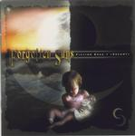

Home Artist links Label link

| Artist: | Forgotten Suns |
| Title: | Fiction Edge 1 (Ascent) |
| Label: | Galileo Records GR 003 |
| Length(s): | 70 minutes |
| Year(s) of release: | 2000 |
| Month of review: | 08/2000 |
Line up
Linx - vocals, backing vocals, piano on 5
Ricardo Falcao - guitars, backing vocals on 9
Miguel Valdares - keyboards and synthesizers
Johnny - bass
Nuno Senica - drums and percussion
Tracks
| 1) | Big Bang | 6.37
|
| 2) | Creation Point | 6.23
|
| 3) | Rising | 2.05
|
| 4) | Nature | 1.08
|
| 5) | Child | 1.28
|
| 6) | The Warning | 2.02
|
| 7) | Wartime | 7.43
|
| 8) | A Journey | 21.20
|
| 9) | Arrival | 1.20
|
| 10) | Routine | 12.19
|
| 11) | Betrayed Part II | 7.51
|
Summary
A band from Portugal on Galileo this time featuring with their debut album.
Notwithstanding the French texts on the back of the booklet. Great artwork
again by Mattias Noren who's really making a name for himself.
The music
The album opens with a record player starting to play. Then we get some
spoken French text spoken by a woman, not one of the band member with
some bell sounds in the back. Then the music itself starts slowly with
sequencers and keyboards. There an orchestral majesty to the music here.
The end has some references to Wish You Were Here.
The second track is Creation Point spread over five parts. The music is
more rocky now, with the guitars featuring and a real vocal part. The vocals
are a bit accented, but it didn't disturb me. After the somewhat neo-proggy
first part we come to the moody second one. Here I'm reminded mostly of Camel,
because of the warm and moody sound. The atmopshere has also something of
Marillion's Clutching At Straws. The Hackettisch guitar at the end gives way
to the (synth) string orchestra in Nature, the third part ending in rain
and thunder, in this way moving into the fourth part, Child, which is dominated
by some nice romantic piano playing and a crying baby. The opening of the
final part The Warning reminds me a lot of the poem reciting in Marillion's
Lavender. Although the vocal is quite different there are also some echoes
of Marillion in the more involved final part. Wartime is in this way the third
real track on the album, opening with a spoken part. Then the sung vocal part
starts and the music is again more in the line of the first part of
Creation Point. The guitars and drumming is quite heavy here in between the
vocal parts. The music is quite varied with a number of different vocal
melodies, with the question/answer chorus being my favourite. A wonderful
vocal melody there, although the lyrics are not always that great, which
is too bad. (As a side remark, I saw that in this lyric a line starting
with >From. I wonder whether this should be the case or is the consequence
of the lyrics being transported in an e-mail. In case you do not know, most
(maybe all) mailers prepend From with > . It seems this happened here as well.)
The guitar playing is very good on this track, from melodic to a meandering
intense solo towards the end. A Journey is the next one up, being more than
twenty minutes in length, the major track on this album. The opening is not
entirely succesful being a sequence of not so interesting guitar sequences.
Actually, this song has quite a tendency to ramble on for quite a while.
During the sixth minute some more appealing melodic passages pass by, but
the follow-up a meandering keyboard solo does little for me. Some tension
creeps in slightly after the twelve minute mark with rhythm guitars and
pounding drums. The music becomes more involved and speedy here with a number
of parts going at it together. Some familiar sounding passages here at times
as well. The impression that remains is that the track is an amalgam of
instrumental prog intermezzo's, but not much more. The song ends with quick
piano and some famous quotes from around the world.
Arrival is the short afterlude, soft melodic vocals to a backdrop of piano.
With the piano we move right into the official closing title, Routine.
We find now that Linx is also quite at home in the higher regions. After
the melancholy few verses, the music takes a turn for the manic (think
Market Square Heroes here). The third vocal style has a bit of the bite
that also Fish gave to Marillion, the presence of which is felt all along
in this track (for instance right after The Whole Life Has Gone Forever More
I'm reminded of the Perimeter Edge part of Misplaced Childhood).
The reference to Marillion stays in the thoughtful bassplaying of the bonus
track Betrayed I/Betrayed Part II (the first according to the booklet, the
second according the backside of the insert). A nice track with a terrific
fast chorus, the ending is a bit chaotic. The vague lyrics are reminiscent
of Gabriel-era Genesis.
Conclusion
An album about the Universe, Earth and Man in a modern progressive style,
with subtle moods, instrumental and vocal tracks, often quite good melodies,
but on the whole the music does not captivate me as strongly as for instance
Metaphor (on the same label). Strong influences from Floyd and mostly Marillion
with a hint of Arena, but also, by the vocals and the long instrumental parts,
they do have a style of their own. Compositionally the band can mature, as
shown by the contrast between Routine and Wartime, which are good tracks,
while for instance A Journey is largely uninteresting. An album that is likely
to appeal to lovers of Marillion and the bands that followed from that.
© Jurriaan Hage